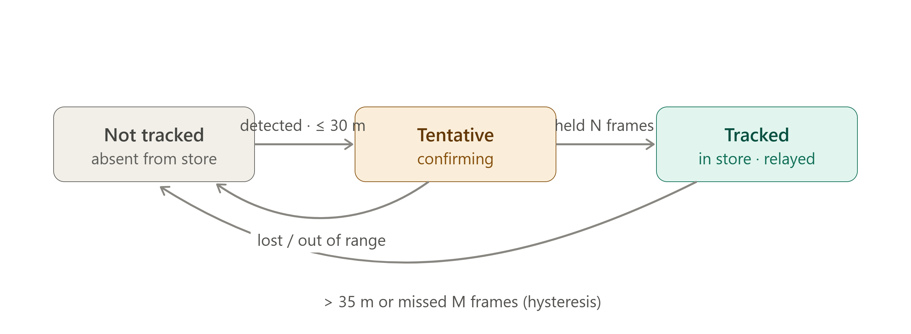

Milestone 1 — Cooperative Vehicle Awareness (A ← B ← C)¶
Requirements, scope, and tech stacks live in the authoritative report m1-cooperative-awareness.md (R1–R19), extended by m1-run-timing-and-event-triggering.md (R20–R22, run timing and demo choreography); this plan references R-numbers instead of restating them, and on any conflict the report wins. Phase structure follows the proposal-deck timeline (second authority).
{kind=link}
1. Introduction¶
Milestone 1 demonstrates cooperative (non-line-of-sight) awareness over V2X: making a vehicle aware of a hazard it cannot see, by relaying another vehicle's perception (report §1).
Three vehicles drive in a collinear convoy — A follows B follows C. Vehicle A's view of C is blocked by B, so A's own camera can never detect C. Vehicle B sees C and broadcasts that perception to A over V2X, and A displays C and its relative position without ever seeing it. M1 builds only A's vehicle (ego) — B and C exist as bench-generated V2X messages (R11) and as content of the provided video; the bench Scenario Player is sanctioned test equipment, not a mock to eliminate.

Objective — B's perception of C reaches A over a V2X relay. A reconstructs C's position by composing its own measurement of B with B's reported measurement of C: d_AC ≈ d_AB + d_BC (valid for the near-collinear convoy; absolute/GPS composition is a later milestone).
2. Scope & Assumptions¶
Report §1 plus its §4 decision record are the hard scope boundary; each assumption below traces there.
- Ego-only build on CarSky. One blueprint with four nodes — V2X ECU, ADA ECU, IVI ECU (provided AAOS), bench Scenario Player — over one Ethernet Bridge (R5, R6); the Cortex-M ECU is omitted.
- Video is provided (saved files) — no live camera bring-up. The detector sees B, the visible occluder — C is by definition never in ego's frame (R12).
- Pretrained detector, no training; CPU-only — no GPU requested from BTC (§4 decisions).
- Video input spec is unconfirmed — format / frame rate / data rate are to be studied and proposed to FPT-Mentor (report § Input constraints); Phase 2 carries that study.
- Wire encoding is standard ASN.1 UPER via the Vanetza ITS2 codec (R1); JSON is used only on the intra-ego links (R2, R4).
- Messages are unsigned — no signing/PKI stack in M1 (the R1 profile carries no security envelope).
- No GNSS path — sender pose values originate in bench-generated CPM contents (R11); the IVI renders relative geometry only, no map and no GNSS injection (§4 decisions).
- Composition assumes a near-collinear, same-heading convoy (§1 objective note).
- Risk is the R14 Collision Risk Assessment (CRA) abstraction with the M1 NLOS plugin on the fixed distance criterion (R13); speed-scaled risk and further hazard types are future plugins (report § Future developments).
3. Development Plan & Order of Implementation¶
The plan is contract-first: the contracts are the report's R1–R6, frozen in Phase 0 before dependent work, so every later phase is "swap mock data for real data" inside a shape that already works.
Deviation from the deck, flagged: the deck timeline places the ADA↔IVI message definition inside Phase 2, but the display track (Phase 5) starts in parallel with Phase 2 and must build against a frozen R4 mock — so this plan freezes R4 in Phase 0 with the other contracts (contract-first principle; report authority over deck).
With the contracts frozen, three tracks run in parallel and converge at Phase 6 (timeline):
- Comms track — Phase 1: V2X ECU + bench Scenario Player exchanging real R1 CPMs (mock perception contents until Phase 6).
- ADA track — Phase 2 first (skeleton + store + state machine), then Phases 3 ∥ 4 side by side. They never call each other — they share only the R3 store: detection (R12) writes
own_sensorentries through the JSONL subprocess boundary; fusion (R13/R14/R15) consumes the store and the live R2 feed. - Display track — Phase 5: IVI HMI built against mock R4 warnings from the start.
Order of implementation¶
Step 0 — Phase 0: freeze R1–R6.
Step 1 — run three tracks in parallel: Phase 1 (comms) · Phase 2 → 3 ∥ 4 (ADA) · Phase 5 (display).
Step 2 — converge: Phase 6 replaces every mock with real data and records the R19 run.
Single-developer fallback: run the phases sequentially 0 → 1 → 2 → 3 → 4 → 5 → 6. The parallel plan is the optimization for multiple people.
Platform & portability¶
- Node/blueprint/Room mechanics, deployment steps, and the per-node table: report § Cloud development constraints and R5/R6 — not restated here.
- All team code is plain Linux processes; the V2X ECU touches the radio only through the R7 adapter seam, so the layers above it move to real modem hardware unchanged — that node's focus goal.
4. Global Definitions¶
The contracts are defined once, in the report: R1 CPM profile · R2 V2X→ADA object message · R3 TrackedObject schema · R4 ADA→IVI warning/state messages · R5 node deployment · R6 Ethernet-bridge network.
Track admission gate (R13)¶
Gate constants are externalized configuration, never literals. R13 fixes the 30 m admission threshold; the exit hysteresis and the N/M counters come from its attached state-machine diagram — N and M are proposals to confirm.
| Constant | Value | Meaning |
|---|---|---|
gate_enter |
30 m | admit C when its reported distance (R2 object.distance) is within this |
gate_exit |
35 m | drop C only beyond this (hysteresis — no flicker at the boundary) |
confirm_hits (N) |
proposed 3 | consecutive in-range updates before admission |
miss_limit (M) |
proposed 5 | consecutive missed updates before expiry — realized as wall-clock, see below |
miss_limit change of form, awaiting the user's re-ratification. The Phase 2–4 ADA HLD, decision D3 implements M as a wall-clock TRACK_TIMEOUT_MS (default 1000 ms = 5 periods at the slower of the two sources), not as a count. Reason: "its messages stop" is a time condition that a counter cannot express — nothing arrives to increment it — and the two sources run at independently configured cadences, so one count M would mean two different real timeouts. Intent is unchanged; the form is. Flagged here rather than silently overridden (phase2_tasks.md § Open items item 1).

Own-sensor objects traverse not_tracked → tentative → tracked; relayed C is admitted on R2 distance within the gate, dropped on leaving it or when messages stop, and carries source = v2x_relayed only. ~~Ego's own Tx (R10) snapshots own_sensor tracks~~ — R10 moved to the future plan; the B-side relay trigger is simulated by the bench scenarios (R11), so nothing in M1 consumes an ego Tx snapshot.
5. Phases¶
Per-phase demo methods follow the deck's "defined output for each phase" table. Contradiction fixed, not absorbed: that table labels the HMI row "6" and the integration row "5", contradicting the deck's own timeline and narrative (phases 1, 2, 5 start in parallel; all converge at 6) — this plan follows the timeline: Phase 5 = HMI, Phase 6 = convergence, matching the previous plan's numbering.
Phase 0 — Freeze the contracts (R1–R6)¶
Objective. Every cross-track contract versioned and committed before dependent work starts.
Tasks. - R1 profile document: fields, units, encoding, and the V2X exchange call flow. - R2 / R3 / R4 schema files with per-language bindings; golden vectors for the R1 codec seam. - Blueprint topology decided: node set (R5) and pin/edge wiring matching the communication topology (R6).
Acceptance Criteria.
- [x] R1 profile document committed; golden-vector CPMs encode/decode through the Vanetza codec seam.
- [x] R2, R3, R4 schemas committed; round-trip tests pass in each consumer language (C++ / Python / Kotlin).
- [x] The R4 additive-version test is defined (a consumer parsing an unknown warningType degrades gracefully).
- [x] Blueprint topology documented (nodes, ethernet pins, edges to the bridge) and validated by the baseline connectivity smoke test.
The baseline blueprint deployed as trial2_minh_netcheck with all nodes Running and smoke-test criteria C1–C5 met (run record); the non-blocking residuals O3 (MTU headroom) and O4 (AAOS listener) stay open in phase0_tasks.md.
Phase 1 — Comms bring-up: V2X ECU + Scenario Player (R5–R9, R11 — R10 moved to the future plan)¶
Objective. Bench CPMs reach the deployed Room and decode into R2 messages at the ADA ECU. Receive-only — ego broadcasts nothing.
Tasks.
- Build & push the OCI images, author the blueprint, deploy, verify all nodes Running (R5); prove pair-wise UDP reachability (R6).
- Radio adapter seam init · configure · subscribeRx · send (R7); modem stub FSM with fault injection (R8).
- Rx pipeline decode → validate → dedupe → forward (R9). ~~Ego Tx via the adapter send (R10)~~ — moved to the future plan; not implemented in M1. The R7 seam still declares send, but nothing calls it.
- Bench scenario-configurable CPM generation (R11).
- V2X-side JSONL event logs (message rx/tx, decode results) — the R18 evidence stream starts here.
Acceptance Criteria. - [ ] The blueprint deploys to a Room; the Deployment Viewer shows every node Running; the team APK launches on the AAOS node (R5). - [ ] UDP reachability between every communicating pair; traffic captured on the bridge network (R6). - [ ] CI import check passes — no direct transport imports above the seam; telux parity notes + port plan committed (R7). - [ ] The full scripted call flow is acked and logged; each injected fault produces a defined, logged recovery (R8). - [ ] Golden-vector CPMs decode correctly; the malformed-input corpus is fully rejected with zero crashes (R9). - [ ] Different bench scenario configurations produce observably different message streams (R11). - [ ] R2 messages observed at the ADA ECU carrying decoded bench-scenario values, not constants (R2). - [ ] Demo: Wireshark capture of V2X PDUs correctly sent/received at the V2X ECU interface.
Phase 2 — ADA scaffolding: store + state machine, no detector (R3, R13)¶
Objective. Stand up the ADA skeleton, the R3 track store, and the R13 admission state machine on mock input, so the pipeline works before any ML.
Tasks. Decomposed in phase2_tasks.md; design of record is ada-ecu-hld.md, which realizes ada-ecu.svg.
{kind=link}
- ADA C++17 module skeleton inside ADA_ECU/; CRA interface + registry + database schema defined (consumed by R14 in Phase 4).
- R3-shaped store; R13 state machine driven by mock R2 messages and mock own-sensor entries — the mocks are external stimulus (a JSONL fixture through the real detector-reader, real datagrams from
tools/mock_v2x_sender.py), never a branch insidesrc/. - Video-input study — produced: the video-input study §3 was the format / frame rate / data rate proposal for FPT-Mentor (report § Input constraints); what remains is sending it. The clip itself is already in the repo (
ADA_ECU/media/ego-b-occluding-c.mp4, landed by Phase 312.3.7.1), so nothing here blocks Phase 3.
Acceptance Criteria.
- [x] The store exposes all R3 fields; detector-shaped and relayed-shaped entries enter through the identical interface (R3).
- [x] Mock-driven state transitions are observable in logs and match the R13 diagram; toggling the mock off yields no tracks.
- [x] Mock C is admitted only within gate_enter and dropped only beyond gate_exit or after miss_limit — no add/remove flicker.
- [x] Gate constants are read from configuration — no literals.
- [x] CRA database schema committed; video-input proposal sent to FPT-Mentor.
- [x] Demo: build + CI round-trip tests green on the frozen contracts (golden vectors).
Phase 3 — Object detection from video (R12) — runs ∥ with Phase 4¶
Objective. Replace the mock own-sensor input with real detection: a pretrained detector finds B, the visible occluder, in the provided video and estimates its distance.
Tasks. Decomposed in phase3_tasks.md.
- YOLO11n exported to ONNX on ONNX Runtime CPU; OpenCV video decode behind the frame-source seam.
- Per-frame detection + distance estimation; stream R3 JSONL over stdout into the store (subprocess contract — no FFI, no RPC).
- The clip is landed at
ADA_ECU/media/ego-b-occluding-c.mp4with its provenance sidecar (task group 3.7,12.3.7.1): openly-licensed dashcam footage under the Pexels License, cut and re-encoded with ffmpeg to the the video-input study's §3 spec — 1280×720, 20 fps CFR, 200 frames / 10.0 s, ~5 MB. It is baked into the image as one earlyCOPY media/ /app/media/layer, the only way a file reaches a Container Node (m1-video-source-and-ivi-dashcam.md §5). B occludes the ego lane in every sampled frame, closing from ~60 m to ~10 m; C is synthetic — it exists only as a position the bench asserts over V2X, so "C never visible" holds by construction and what the footage had to avoid was a decoy vehicle held in the ego lane beyond B. The clip is 10 s, and a longer run comes from looping it (DETECTOR_LOOP=true); reasoning in the sidecar. The synthetic generator stays a CI fixture and cannot produce R12 evidence.
Acceptance Criteria.
- [x] Detection log over the provided clip with per-frame objects and distance estimates (R12).
- [x] Entries enter the store via the same R3 interface as relayed entries, source = own_sensor — mock no longer required.
- [x] Zero detections labeled C — checked on the detection log by ADA_ECU/tools/check_zero_c.py (feeds the R19 zero-C check).
- [ ] Runs CPU-only on the provided clip; offline pace acceptable — effective inference rate ≥ 5 Hz (≤ 200 ms per sampled frame) measured on the deployed node. Live detection at speed is future scope.
Phase 4 — Obscured-object fusion: relayed C + risk + warning (R13–R15) — runs ∥ with Phase 3¶
Objective. ADA turns live R2 traffic into a tracked ghost C, assesses NLOS collision risk through the CRA abstraction, and emits R4 warnings carrying the composed scene.
Tasks. Decomposed in phase4_tasks.md.
- Relayed-C admission per R13 from R2
object.distance(source = v2x_relayed). - CRA abstraction + the M1 NLOS plugin registered through it, reading/writing the Phase 2 database schema (R14).
- Scene composition (ego, B, ghost C —
d_AC = d_AB + d_BC, lateral offsets component-wise) and edge-triggered R4 warning emission on risk transitions (R15); the periodic awareness state only if time permits (optional). - ADA-side JSONL event logs (track transitions, risk events) completing the R18 collision-risk event list.
- The isolated ADA test is where this phase's deployed evidence comes from — the ADA node exercised alone against a bench emitter standing in for the V2X ECU and a bench sink standing in for the IVI, both from one
tools/ada-bench/image, over the same addresses and ports the full blueprint uses. Procedure: deploy-ada-ecu-walkthrough.md; decomposition: phase4_tasks.md groups 4.9–4.11. Its three nodes run two images and GitHub Actions builds and pushes both —m1-ada-ecu:latestfor the node under test andm1-ada-bench:latestfor the two mocks, the latter deployed twice under differentROLEvalues. Nothing is built by hand, by anyone, on any machine (phase4_tasks.md § Image build and push); the bench's home intools/is sanctioned by node-code-layout.md §tools/. - Then the alternative test — real bench and V2X ECU upstream (phase4_tasks.md group 4.12, one human subtask). The ADA node stays byte-identical and only its neighbours change: the real Scenario Player at
10.99.0.10and V2X ECU at.11replace the upstream mock, while the sink at.13stays a container so a downstream log still exists. Relayed C then originates in a real bench scenario and arrives as a real decoded CPM — the "with bench scenarios live" wording of the boxes below, met without any IVI app. A swap toc-out-of-range.yamlis the negative case in its real-relay form, and R11's own acceptance observed at the ADA node. - The full system test is not in this phase, because it adds the rendering half — the God view drawing ghost C — which is R16/R17 and R19. It is planned once, phase5_minh_tasks.md § Task Group 5.10, and re-recorded in Phase 6. Which configuration closes each criterion: phase4_tasks.md § Acceptance criteria and their closing configuration.
Acceptance Criteria.
- [ ] With bench scenarios live, C's track appears with source = v2x_relayed only and follows the full R13 lifecycle.
- [ ] The NLOS plugin registers through the CRA interface; the abstraction + database schema are the committed artifacts (R14).
- [ ] At least one R4 warning event per scenario run, carrying the risk state and the composed geometry (R15).
- [ ] The event list reconstructs a full run offline (R18).
- [ ] Output check: with a scenario run live, (a) the ADA [EVT] log shows a tracked own_sensor TrackedObject for B and a tracked v2x_relayed TrackedObject for C, both with full R3 fields, plus at least one r4_tx carrying the emitted R4 body; and (b) a pcap of ADA→IVI UDP traffic decodes to the same R4 body — C's full R3 TrackedObject in object, B's position in geometry.vehicleB — correlated to the log by timestamp and length. The frozen R4 carries no full TrackedObject for B; that half is proven from the log, not the wire (phase4_tasks.md § Phase 4 output acceptance).
- [ ] Demo: ADA logs — collision-risk event list; optional annotated video export with per-event risk labels (§1 demo table).
Phase 5 — IVI HMI, mock-driven (R16, R17) — display track, parallel from the start¶
Objective. The IVI renders the warning view — the God view of ego, B, and ghost C — from R4 messages alone, developed against mock warnings and integrated against real data at Phase 6.
Tasks. Decomposed in phase5_minh_tasks.md — the authoritative Phase 5 breakdown, and the home of the system verification test (group 5.10), which is the only place the 5-node blueprint is run.
- Compose HMI with the R16 layout (central Display area + button/app areas) on the provided AAOS node; UDP ingest service for R4.
- 2D Canvas warning view behind the view seam (R17); optional, only if time permits: SceneView 3D through the same seam, multi-process wake-on-warning.
- Not in this phase: the ego video clip display ("dashcam view") in the Display area — deferred, confirmed by the user 2026-08-02. Itemized in §6.
Acceptance Criteria.
- [ ] The HMI runs on the AAOS node with the R16 layout; button/app areas switch what the Display area shows.
- [ ] (Dev) A mock R4 warning brings the warning view up showing ego, B, and ghost C at the composed positions.
- [ ] Ghost C renders from v2x_relayed data only; the 2D drawing is delivered (R17 — 3D stays optional).
- [ ] A newer message with an unknown warningType degrades gracefully (R4 additive-version test).
- [ ] Optional paths, only if built: an ADA message wakes the separate warning app; 3D renders through the view seam.
Phase 6 — Convergence: real data end-to-end (R18, R19, R20–R22 — R10 moved to the future plan)¶
Objective. Replace every mock with real data and record the definition-of-done run — a swap-and-verify step, not a new build.
Tasks.
- Point the IVI at live ADA output. ~~Feed ego Tx (R10) from the real R12 store snapshot instead of mock contents.~~ — moved to the future plan.
- Full-chain rehearsal bench → V2X ECU → ADA → IVI across bench scenarios (e.g. C approaching vs C out of range).
- Record the R19 run with its captures.
- Re-record R22's choreography on the recorded run. The mechanism is built by the phase that owns each file — the bench's paced clock (phase1_tasks.md group 1.6) and its start_delay_s value (group 1.13), the detector's pacer and warm-up measurement (phase3_tasks.md 12.3.2.8, 22.3.6.3), the K1–K6 checker (phase4_tasks.md 21.4.3.4) and the D13 warning lifecycle (phase5_minh_tasks.md 17.5.4.4). This phase runs it once more on the R19 recording, as phase5_minh_tasks.md 22.5.10.10 does on the system test.
Acceptance Criteria.
- [ ] No mocks anywhere in the ego path (the bench is sanctioned test equipment, not a mock).
- ~~[ ] Ego Tx frames captured on the bridge carry live store data, not constants (R10).~~ — moved to the future plan; not an M1 acceptance criterion.
- [ ] One continuous recorded run: the IVI warns and renders ghost C from v2x_relayed only, while the R12 detection log shows zero C for the whole run (R19).
- [ ] Wireshark/pcap of the V2X exchange and of the ADA→IVI traffic corroborates the chain (R15, R19).
- [ ] Every §1 demo-evidence method that cites logs is producible from the R18 logs.
- [ ] K6 — on the recorded run, the interval from T0 (the ADA detector's first emitted R3 line) to the first r4_tx is 8.0 s ≤ Δ < 10.0 s (R22), with K1–K3 passing and K5 within ±1 % on the same run (R20, R21).
- [ ] K7 — the IVI's first [UI] mode=WarningView cause=warning line is the run's first Warning-mode line and follows its startup [UI] mode=HomeView line by ≥ 8.0 s, so the HMI holds the normal screen for at least the first 8 s (R22).
6. Deferred to Later Milestones¶
The single source is the report's § Future developments, mirrored in the future-features register. Standing M1 exclusions live in the report's §4 decision record (R10 ego Tx deferred — the V2X ECU is receive-only, Cortex-M omitted, telux port declined, 3D and multi-process optional, ego video clip deferred, no GPU, no map/GNSS on the IVI).
Ego video clip display on the IVI — re-confirmed deferred, 2026-08-02. m1-video-source-and-ivi-dashcam.md §4/§6 contains a worked design for it (option B4: ADA serves its own clip over HTTP, the IVI plays it with Media3), and §8 flags that adopting it needs the user's word. The user's word was no. The design stays on the shelf, and no Phase 3, 4, 5 or 6 subtask may implement any part of it — HTTP clip serving from the ADA node (a http.server line in the entrypoint, CLIP_HTTP_ENABLED / CLIP_HTTP_PORT), an exposedPorts entry and its gateway route, Media3/ExoPlayer and a DASHCAM_MEDIA_URI, a dashcam DisplayMode, a raw-resource clip copy in the APK and its size cost (fallback B5), or any video pin (an R5/R6 re-freeze). §6 is where each has its concrete shape; reading it is not permission to build it.
Real-time detector pacing is not on that list. R20 makes it a requirement on its own footing — ada-ecu-design-decisions.md D10 — and R22 cannot place any demo instant without it, so phase3_tasks.md 12.3.2.8 builds the pacer. What the deferral forbids is the dashcam surface itself, listed above.
7. Definition of Done¶
R19: all phases pass their acceptance criteria, and one continuous recorded run shows vehicle C appearing on ego's IVI purely via the V2X relay — ghost C rendered from v2x_relayed data only, zero direct C detections in ego's own perception — corroborated by the R19 captures.